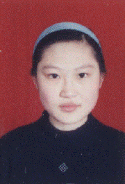

在崇高信仰的旗帜下，脚踏实地，全面成才
尊敬的各位老师、同学：
大家好！我叫杨柳，是城市与环境科学学院地理系96级本科生。今天，我报告的题目是《在崇高信仰的旗帜下，脚踏实地，全面成才》。
大学四年，我获得过“宝钢教育奖优秀学生奖学金”，连年获得“一等人民奖学金”，曾被评为“ 长春市文明大学生”、“校优秀共产党员”、“校优秀学生”、“校优秀学生干部”、“校专业学习十佳”，1999年被评为“长春市十佳大学生”。
1978年的春天，我出生在辽宁省铁岭市的一个普通家庭。父母对我非常宽容，为我的个性发展创造了自由的空间。父亲的军人风范、母亲的乐观顽强的精神，造就了我自信、自强、永不言输的性格。小
大家好！我叫杨柳，是城市与环境科学学院地理系96级本科生。今天，我报告的题目是《在崇高信仰的旗帜下，脚踏实地，全面成才》。
大学四年，我获得过“宝钢教育奖优秀学生奖学金”，连年获得“一等人民奖学金”，曾被评为“ 长春市文明大学生”、“校优秀共产党员”、“校优秀学生”、“校优秀学生干部”、“校专业学习十佳”，1999年被评为“长春市十佳大学生”。
1978年的春天，我出生在辽宁省铁岭市的一个普通家庭。父母对我非常宽容，为我的个性发展创造了自由的空间。父亲的军人风范、母亲的乐观顽强的精神，造就了我自信、自强、永不言输的性格。小
学、中学，我的学习成绩一路领先。1993年我以优异的成绩考入了辽宁省重点高中——铁岭市第一高级中学。高中的生活紧张而充实，在刻苦学习的同时，我也十分注重锻炼自己的能力，班级的团支书和校学生会宣传部长的工作使我的能力有了很大提高。三年中我多次被评为“校优秀学生干部”，曾获“市三好学生”称号。在班主任优秀共产党员戴洪涛老师的指导和教诲下，我渐渐懂得了：一个人只有树立正确的信仰和远大的理想，人生才会充实，奋斗才有方向。正是这种信念，使我对党有了较早的认识和追求。1996年6月，在我即将离校的时候，我光荣地加入了中国共产党。那天，我在日记中写到：从今天开始，我就是一名青年学生党员了，我要用实际行动来坚守自己的信仰，来实现人生的理想。
1996年8月，我接到了东北师范大学的录取通知书。刚入大学时，我就想怎样度过这人生中最宝贵的青春年华呢？入学不久我听了第一届优秀学生“理想与成才”先进事迹报告会，一位中文系学生的全面发展的事迹触动了我的心弦。她说：“生活达到一定阶段的目标后，总让人以为到了终点，一切都可以放松下来。可事实上，每个终点背后的起点才刚刚开始，而更美好的向往还在远方。”她的话，至今让我记忆犹新。是呀，考上大学并不是我奋斗的终点，我要在新的起跑线上用自己的勤奋和自信，一步一个脚印坚实地走下去。就这样，大学生活中，学习成了我生活的主旋律，追求全面发展成了我的奋斗目标。
入学后不久，我就被选为班长。我知道自己是同学的领头羊，就要在各个方面做出榜样。我从不把学习当成负担，而是一种向自我挑战的乐趣。地理学这门古老的基础学科在当今社会不是一个热门，专业课知识乍一接触也确实感到生涩难懂，尤其是地质基础课最让我觉得头疼，可是我并没有退缩。我开始起早贪黑的学习。在寝室楼门刚刚开启时，我已洗漱完毕去上自习，中午则是一个人静静地坐在教室里，整理课上所学的内容，每门专业课我都有两本笔记，一本是课上的记录本，而另一本则是用自己的语言归纳总结的笔记。到了夜晚当别人酣然入梦时，我还在昏暗的灯光下记那一连串的地史年表、地层层序、矿物特性。终于，在孜孜不倦的求索下，我的刻苦得到了回报，那些摆在实验室里的岩石，矿物标本再不显得那么讨厌丑陋，而我也完全可以想象出它们几十亿年前喷涌的形象，地表座座山峰的隆起和海陆变迁的宏伟气势，无一不具体地反映在我的脑海中。最终我以全班最高分的成绩征服了那曾让我头疼的地质基础课。闯过了一道难关，收获了一份成功，我对专业课学习的兴趣也越来越浓，四年中专业课成绩几乎门门优秀，为自己打下了坚实的专业基础。
我十分酷爱英语，不仅因为它是现代社会的生存武器，更是因为我喜欢那悦耳的发音，每个句子都仿佛是动听的音符所奏出的美妙乐章。学好英语的基本条件是最大限度地扩大单词量，这就需要掌握一些高效的记忆方法。我采用的是“即学即用法”。每当我学到一些新单词，就用它们造几个简单的句子或写一篇小短文，这些句子也许并不华丽，文章也许并顺畅，但我在应用中巩固了记忆，也锻炼了写作的能力。日积月累，我的单词记扎实了，写作水平也有了提高。当然遗忘是必然现象，所以我以一个月为周期反复复习和巩固所学的知识。也正是如此，我以较高的分数一次性通过了国家外语四、六级的考试。大学里，学英语不仅是为了考试，更重要的是应用，要“听、说、读、写”全面发展。初、高中的英语学习只注重笔头能力，我所学的是“哑巴英语”，虽然我热衷于听英文磁带，可我很少练习开口去说。上了大学，我就决心一定要练好口语。我买了《许国璋英语》及其磁带，从口语的基础练起。每晚临睡前收听英文节目时，除了练习听力，还模仿发音。一大早，我就跑到地理系的大平台上，高声朗读英文，练习发音。要想说一口流利的英语，首先就要背诵范文，我找来《美国口语对话》，从中节选文章，先从简单的入手，一篇、两篇、三篇……直至十篇文章被我消融后，我的嘴也灵巧起来。虽然我的口语不是最好的，但我仍在不断努力，不断告诉自己：我能行！
在大学一年级的考试中，我以高出第二名40多分的成绩位于第一。于是我就从这第一个台阶开始，一阶一阶的向上攀登，我的刻苦和勤奋也换来了学习的丰收。如果说我在学习中取得了一些成绩，那么最大的原因就是善于利用时间、持之以恒，不放过生命中的每一分钟。
学习上我从未放松过对自己的要求，工作中我更是一丝不苟，踏实肯干。在大学期间，我曾先后担任了班长、院分团委副书记和校学生会副主席等职务。最难忘的是在校学生会的那段日子，充实而又苦涩，忙碌却又欣慰。它让我品尝到了为同学服务的快乐，也让我体会到了在工作和学习中寻找平衡的艰辛。
刚接手工作的一个月里，几乎天天有会，甚至有时一天中我要参加五次会议。教师技能大赛、外语大赛、文艺汇演……往往是一个活动尚未结束而新的活动就接了上来，我的课余时间几乎全被占满。记得在筹备校第六届外语大赛时，我和学习部的同学天天中午、晚上在校学生会的工作室里研究、讨论大赛的内容，往往是直到寝室楼门即将关闭的时候，我才从3舍B区的地下室飞奔到1舍A区。为了找到语速适中、便于模仿的英文原声影带，我一连四天下午都在外语系的语音室里一本、一本带子地听，最终在50多个带子中选择了15个片断进行录制。由于我们的充分准备，外语大赛上“与外教对话”、“模拟影片情节”等新颖的内容使现场气氛非常活跃，也受到了校内师生的一致好评。
困、忙、累可以说是我在校学生会工作的生活写照。繁忙的工作也打乱了我原来的学习计划，中午、周末、晚自习常常被工作挤满，学习怎么办？我就在保持早上上自习，临睡前练听力的同时，也向时间要成绩、要效率。没有整块的时间，我就挤时间，见缝插针地寻找时间，争取在同一时间做更多的事情，使时间多元化。早上，洗脸、刷牙、吃早饭的同时，我思考当天的学习、工作计划，在行走中考虑问题，我把单词写在纸上，装在兜里，在开会前和课间看上两眼；晚上，我把熄灯后的学习时间拉长，为了克服困意，我常故意饿着肚子，用饥饿来对抗困，一直学到午夜；我还规定自己每天早上5∶30之前必须起床。在忙碌充实的生活中，对我来说最痛苦的就是清晨的起床。为了能够按时起床且不打扰其他同学，我把闹表放在自己的枕头下。每当听到闹表的铃声，我的意识跌跌撞撞地从熟睡中苏醒，酸痛仿佛渗透到身体的每一个细胞，四肢沉重，抬一下胳膊都觉得异常痛苦。每天我都在与疲倦斗争，听着其他同学均匀的呼吸，我多想在床上多躺一会儿，哪怕只有5分钟也好。每每作这种斗争，我的信念和毅力总能战胜疲倦。在人生的跑道上，成功与失败之间或许只差一步，只要你再坚持一会儿，或许就是那5分钟，成功就会属于你。我正是这样坚持着，分秒必争地生活着。因为我知道当今世界是一个竞争的时代，需要全面发展的人才，被时间抛弃的人，也必将被时代所抛弃!
除了紧张的工作和学习，我也尽量发挥自己的特长，为班级、为学校奉献着自己的一份光和热。篮球赛场上有我奔跑的身影；辩论赛中有我激昂的陈词；文艺表演里有我热情洋溢的歌舞；红烛协会中有我奉献的“烛光”。我知道虽然自己很努力地拼搏进取，但却并非完美。然而学校、老师和同学却给予了我太多的荣誉。现在，我以全院第一名的成绩被保送为硕士研究生。
生活没有终点，每一天都是最初奋斗的日子。大学四年级，同学们都对我说：“再没有考试的压力，也不担任任何职务，你也该好好放松一下了。”可是，我想，作为一名青年学生党员，一名大学生，就要紧紧把握时代的脉搏，抓紧时间，刻苦成才。一位老师告诉我，向自己潜能挑战的最佳方式就是备考GRE，这一过程是痛苦的，也是快乐的。在她的指点下，我今年寒假参加了北京新东方学校GRE辅导班的学习，我的感触很深。那里云集了清华、北大、中山等著名学府的学子，我的压力是相当大的，原本以为自己是很勤奋、很刻苦的，但在那儿，这只被视为平常。每一位学员都在全力拼搏，在通宵教室里，大家都学到凌晨2点多，只用4个小时左右的睡眠来恢复精力，早晨6点钟，又都涌上公交车，共同奔往教室。在那里，一种斗志昂扬、拼搏向上的热情，像大海一样浸润着我，鼓舞着我。回来以后，我深感我们东北的学习气氛没有北京、南方学校那么热火朝天，但我知道三角形的面积是由底边和高相乘所得到的，也许我的底边短，但我会用自身的努力来增加高度。新东方学校的老师说：“收集了8970个单词的‘红宝书’必须背到12遍，少一遍也不行。”GRE的单词怪僻、难记，在背单词的头一个月里，我的脑袋涨涨的，往往是一看到“红宝书”，头就条件反射似的感到疼痛。在复习中，我的信心一次次地被打碎，又一次次地重新建立起来，因为，新东方学校的校训就是“从绝望中寻找希望，人生终将辉煌！”。
过去的种种，无论是奔是忙，是哭是笑，是通宵达旦的苦读，还是风风火火的工作，都让我明白：人生只要努力就必有回报!就像一首歌中唱道“把握生命中的每一分钟，全力以赴我们心中的梦！”生命只有一次，我们没有理由挥霍生命，虚度光阴。同学们，让我们在崇高信仰的旗帜下，从一秒一分做起，大胆想象，用青春的豪气与激情去拼搏进取，用生命挑战极限，去追逐我们心中的理想！
1996年8月，我接到了东北师范大学的录取通知书。刚入大学时，我就想怎样度过这人生中最宝贵的青春年华呢？入学不久我听了第一届优秀学生“理想与成才”先进事迹报告会，一位中文系学生的全面发展的事迹触动了我的心弦。她说：“生活达到一定阶段的目标后，总让人以为到了终点，一切都可以放松下来。可事实上，每个终点背后的起点才刚刚开始，而更美好的向往还在远方。”她的话，至今让我记忆犹新。是呀，考上大学并不是我奋斗的终点，我要在新的起跑线上用自己的勤奋和自信，一步一个脚印坚实地走下去。就这样，大学生活中，学习成了我生活的主旋律，追求全面发展成了我的奋斗目标。
入学后不久，我就被选为班长。我知道自己是同学的领头羊，就要在各个方面做出榜样。我从不把学习当成负担，而是一种向自我挑战的乐趣。地理学这门古老的基础学科在当今社会不是一个热门，专业课知识乍一接触也确实感到生涩难懂，尤其是地质基础课最让我觉得头疼，可是我并没有退缩。我开始起早贪黑的学习。在寝室楼门刚刚开启时，我已洗漱完毕去上自习，中午则是一个人静静地坐在教室里，整理课上所学的内容，每门专业课我都有两本笔记，一本是课上的记录本，而另一本则是用自己的语言归纳总结的笔记。到了夜晚当别人酣然入梦时，我还在昏暗的灯光下记那一连串的地史年表、地层层序、矿物特性。终于，在孜孜不倦的求索下，我的刻苦得到了回报，那些摆在实验室里的岩石，矿物标本再不显得那么讨厌丑陋，而我也完全可以想象出它们几十亿年前喷涌的形象，地表座座山峰的隆起和海陆变迁的宏伟气势，无一不具体地反映在我的脑海中。最终我以全班最高分的成绩征服了那曾让我头疼的地质基础课。闯过了一道难关，收获了一份成功，我对专业课学习的兴趣也越来越浓，四年中专业课成绩几乎门门优秀，为自己打下了坚实的专业基础。
我十分酷爱英语，不仅因为它是现代社会的生存武器，更是因为我喜欢那悦耳的发音，每个句子都仿佛是动听的音符所奏出的美妙乐章。学好英语的基本条件是最大限度地扩大单词量，这就需要掌握一些高效的记忆方法。我采用的是“即学即用法”。每当我学到一些新单词，就用它们造几个简单的句子或写一篇小短文，这些句子也许并不华丽，文章也许并顺畅，但我在应用中巩固了记忆，也锻炼了写作的能力。日积月累，我的单词记扎实了，写作水平也有了提高。当然遗忘是必然现象，所以我以一个月为周期反复复习和巩固所学的知识。也正是如此，我以较高的分数一次性通过了国家外语四、六级的考试。大学里，学英语不仅是为了考试，更重要的是应用，要“听、说、读、写”全面发展。初、高中的英语学习只注重笔头能力，我所学的是“哑巴英语”，虽然我热衷于听英文磁带，可我很少练习开口去说。上了大学，我就决心一定要练好口语。我买了《许国璋英语》及其磁带，从口语的基础练起。每晚临睡前收听英文节目时，除了练习听力，还模仿发音。一大早，我就跑到地理系的大平台上，高声朗读英文，练习发音。要想说一口流利的英语，首先就要背诵范文，我找来《美国口语对话》，从中节选文章，先从简单的入手，一篇、两篇、三篇……直至十篇文章被我消融后，我的嘴也灵巧起来。虽然我的口语不是最好的，但我仍在不断努力，不断告诉自己：我能行！
在大学一年级的考试中，我以高出第二名40多分的成绩位于第一。于是我就从这第一个台阶开始，一阶一阶的向上攀登，我的刻苦和勤奋也换来了学习的丰收。如果说我在学习中取得了一些成绩，那么最大的原因就是善于利用时间、持之以恒，不放过生命中的每一分钟。
学习上我从未放松过对自己的要求，工作中我更是一丝不苟，踏实肯干。在大学期间，我曾先后担任了班长、院分团委副书记和校学生会副主席等职务。最难忘的是在校学生会的那段日子，充实而又苦涩，忙碌却又欣慰。它让我品尝到了为同学服务的快乐，也让我体会到了在工作和学习中寻找平衡的艰辛。
刚接手工作的一个月里，几乎天天有会，甚至有时一天中我要参加五次会议。教师技能大赛、外语大赛、文艺汇演……往往是一个活动尚未结束而新的活动就接了上来，我的课余时间几乎全被占满。记得在筹备校第六届外语大赛时，我和学习部的同学天天中午、晚上在校学生会的工作室里研究、讨论大赛的内容，往往是直到寝室楼门即将关闭的时候，我才从3舍B区的地下室飞奔到1舍A区。为了找到语速适中、便于模仿的英文原声影带，我一连四天下午都在外语系的语音室里一本、一本带子地听，最终在50多个带子中选择了15个片断进行录制。由于我们的充分准备，外语大赛上“与外教对话”、“模拟影片情节”等新颖的内容使现场气氛非常活跃，也受到了校内师生的一致好评。
困、忙、累可以说是我在校学生会工作的生活写照。繁忙的工作也打乱了我原来的学习计划，中午、周末、晚自习常常被工作挤满，学习怎么办？我就在保持早上上自习，临睡前练听力的同时，也向时间要成绩、要效率。没有整块的时间，我就挤时间，见缝插针地寻找时间，争取在同一时间做更多的事情，使时间多元化。早上，洗脸、刷牙、吃早饭的同时，我思考当天的学习、工作计划，在行走中考虑问题，我把单词写在纸上，装在兜里，在开会前和课间看上两眼；晚上，我把熄灯后的学习时间拉长，为了克服困意，我常故意饿着肚子，用饥饿来对抗困，一直学到午夜；我还规定自己每天早上5∶30之前必须起床。在忙碌充实的生活中，对我来说最痛苦的就是清晨的起床。为了能够按时起床且不打扰其他同学，我把闹表放在自己的枕头下。每当听到闹表的铃声，我的意识跌跌撞撞地从熟睡中苏醒，酸痛仿佛渗透到身体的每一个细胞，四肢沉重，抬一下胳膊都觉得异常痛苦。每天我都在与疲倦斗争，听着其他同学均匀的呼吸，我多想在床上多躺一会儿，哪怕只有5分钟也好。每每作这种斗争，我的信念和毅力总能战胜疲倦。在人生的跑道上，成功与失败之间或许只差一步，只要你再坚持一会儿，或许就是那5分钟，成功就会属于你。我正是这样坚持着，分秒必争地生活着。因为我知道当今世界是一个竞争的时代，需要全面发展的人才，被时间抛弃的人，也必将被时代所抛弃!
除了紧张的工作和学习，我也尽量发挥自己的特长，为班级、为学校奉献着自己的一份光和热。篮球赛场上有我奔跑的身影；辩论赛中有我激昂的陈词；文艺表演里有我热情洋溢的歌舞；红烛协会中有我奉献的“烛光”。我知道虽然自己很努力地拼搏进取，但却并非完美。然而学校、老师和同学却给予了我太多的荣誉。现在，我以全院第一名的成绩被保送为硕士研究生。
生活没有终点，每一天都是最初奋斗的日子。大学四年级，同学们都对我说：“再没有考试的压力，也不担任任何职务，你也该好好放松一下了。”可是，我想，作为一名青年学生党员，一名大学生，就要紧紧把握时代的脉搏，抓紧时间，刻苦成才。一位老师告诉我，向自己潜能挑战的最佳方式就是备考GRE，这一过程是痛苦的，也是快乐的。在她的指点下，我今年寒假参加了北京新东方学校GRE辅导班的学习，我的感触很深。那里云集了清华、北大、中山等著名学府的学子，我的压力是相当大的，原本以为自己是很勤奋、很刻苦的，但在那儿，这只被视为平常。每一位学员都在全力拼搏，在通宵教室里，大家都学到凌晨2点多，只用4个小时左右的睡眠来恢复精力，早晨6点钟，又都涌上公交车，共同奔往教室。在那里，一种斗志昂扬、拼搏向上的热情，像大海一样浸润着我，鼓舞着我。回来以后，我深感我们东北的学习气氛没有北京、南方学校那么热火朝天，但我知道三角形的面积是由底边和高相乘所得到的，也许我的底边短，但我会用自身的努力来增加高度。新东方学校的老师说：“收集了8970个单词的‘红宝书’必须背到12遍，少一遍也不行。”GRE的单词怪僻、难记，在背单词的头一个月里，我的脑袋涨涨的，往往是一看到“红宝书”，头就条件反射似的感到疼痛。在复习中，我的信心一次次地被打碎，又一次次地重新建立起来，因为，新东方学校的校训就是“从绝望中寻找希望，人生终将辉煌！”。
过去的种种，无论是奔是忙，是哭是笑，是通宵达旦的苦读，还是风风火火的工作，都让我明白：人生只要努力就必有回报!就像一首歌中唱道“把握生命中的每一分钟，全力以赴我们心中的梦！”生命只有一次，我们没有理由挥霍生命，虚度光阴。同学们，让我们在崇高信仰的旗帜下，从一秒一分做起，大胆想象，用青春的豪气与激情去拼搏进取，用生命挑战极限，去追逐我们心中的理想！